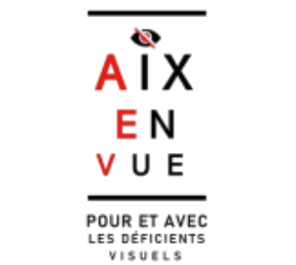

Le Logo Aix En Vue
La signature combine l'œil symbolique d'Aix en Vue et le bloc typographique en Playfair Display Black (900) avec effet d'échelle décroissante (clin d'œil aux tableaux d'acuité visuelle) et initiales en Rouge Signature #D80000.

Logo Complet Administratif (assets/logos/logo-aev.png)Couleurs Cézanne & Provence
Cliquez sur n'importe quelle carte de couleur pour copier son code HEX dans votre presse-papiers. Cette palette garantit à la fois une chaleur éditoriale aixoise et des contrastes élevés (WCAG AAA) pour les personnes malvoyantes.
RVB : 216, 0, 0
RVB : 17, 17, 17
RVB : 244, 242, 235
RVB : 251, 248, 240
RVB : 232, 228, 217
RVB : 200, 134, 10
RVB : 240, 192, 96
RVB : 26, 58, 92
RVB : 92, 122, 92
RVB : 51, 51, 51
Polices & Hiérarchie
Association de Playfair Display (titres expressifs et culturels) et de Manrope (linéale géométrique ultra-lisible pour les informations pratiques, dates, lieux et corps de texte).
Boutons, Badges & Découpes
Sur vos affiches, utilisez ces formes trapézoïdales légèrement inclinées (clip-path) et les traits de pinceau vectoriels (présents dans le sous-dossier assets/svg-elements/) pour encadrer la date, le tarif ou l'appel à l'action.
Encart d'information avec bordure franche Rouge
Idéal en bas d'affiche pour mettre en valeur le lieu exact, les horaires d'ouverture, les accès PMR/malvoyants et les coordonnées de contact sans surcharger la composition.
Bandeau des Partenaires
Fichier disponible dans assets/logos/nos_partenaires_bandeau.webp pour intégration directe en pied d'affiche officielle.